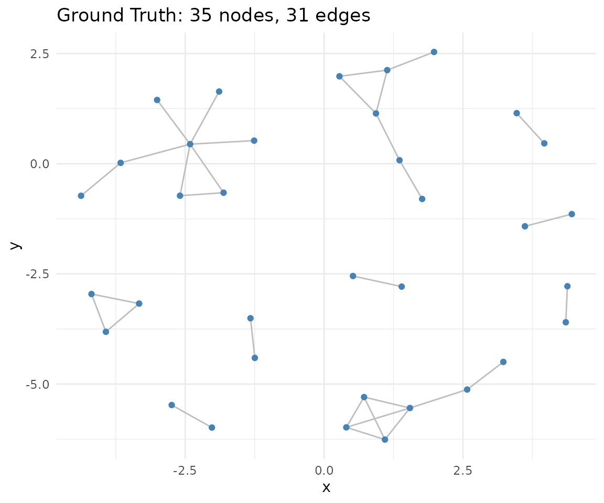
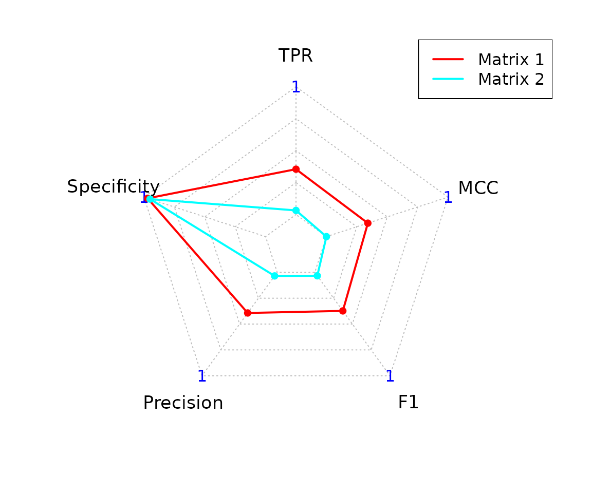
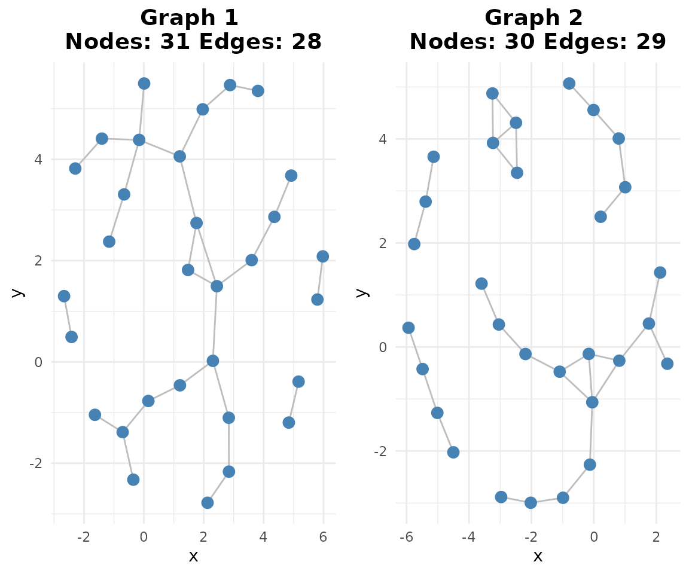
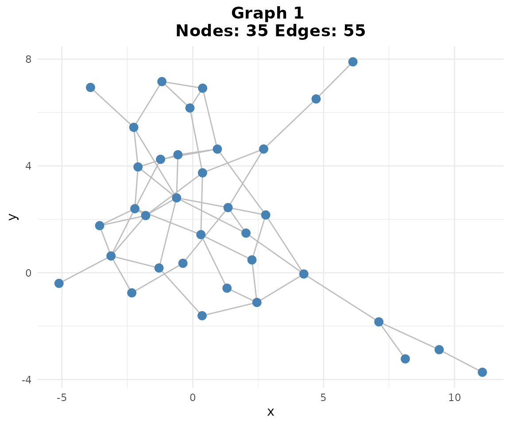
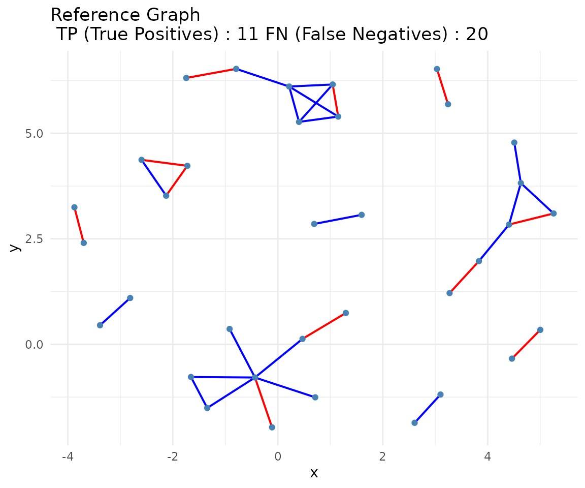
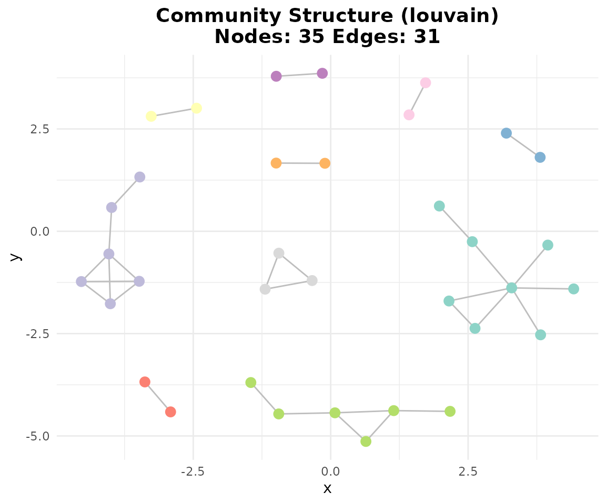
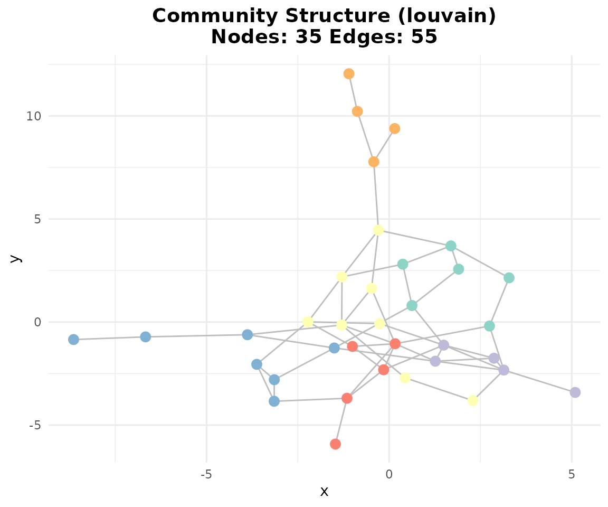
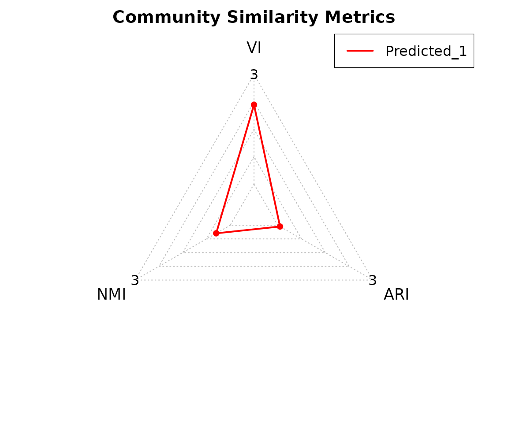
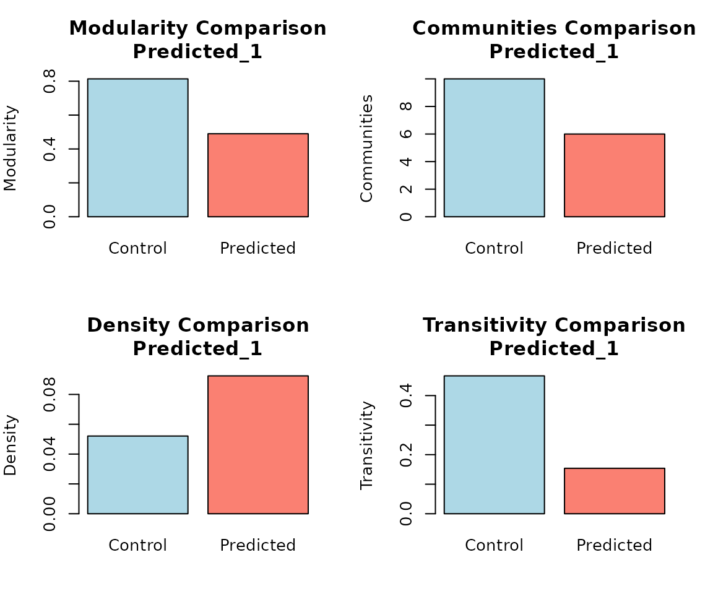

scGraphVerse Case Study: Zero-Inflated Simulation and GRN Inference
Francesco Cecere
Source:vignettes/simulation_study.Rmd
simulation_study.RmdIntroduction
scGraphVerse is a modular and extensible R package for constructing, comparing, and visualizing gene regulatory networks (GRNs) from single-cell RNAseq data. It includes several inference algorithms, utilities, and visualization functions.
Single-cell data presents unique challenges: high sparsity, batch variation, and the need to distinguish shared versus condition-specific regulation. scGraphVerse helps address these through multi-method inference consensus. It starts with SingleCellExperiment, Seurat or matrix-based objects, enabling flexible pipelines across diverse experimental setups.
Why use scGraphVerse?
While several GRN inference packages exist in Bioconductor (e.g. SCENIC), most are limited to single-method inference or lack support for multi-condition, multi-replicate, and multi-method comparisons. scGraphVerse adds value by:
- Supporting multiple inference algorithms, including GENIE3, GRNBoost2, ZILGM, PCzinb, and Joint Random Forests (JRF).
- Providing joint modeling of GRNs across multiple conditions via JRF
- Enabling benchmarking simulations from known ground-truth GRNs with customizable ZINB-based count matrix generation.
- Offering community analysis, including consensus GRNs and databases integration (e.g. PubMed and STRINGdb).
How scGraphVerse works
The typical scGraphVerse workflow begins with one or more count matrix, or objects like SingleCellExperiment or Seurat. These are passed to the core function infer_networks(), which runs the selected inference methods and returns an adjacency matrix or list of matrices.
For benchmarking or teaching purposes, synthetic datasets can be generated using zinb_simdata() based on a known adjacency matrix. This supports method comparison across early, late, and joint integration strategies using earlyj() and compare_consensus().
An end-to-end workflow, from network inference to community detection and consensus visualization, is provided in the rest of vignettes.
As intended for both high-throughput analysis and intuitive usage, scGraphVerse supports custom workflows using its modular functions.
Simulation study
In this simulation study, we use scGraphVerse to:
- Define a ground-truth regulatory network from high-confidence interactions.
- Simulate zero-inflated scRNA-seq count data that respects the ground truth.
- Infer gene regulatory networks using GENIE3.
- Evaluate performance with ROC curves, precision–recall scores, and community similarity.
- Build consensus networks and perform edge mining.
1. Load Ground-Truth Network
We use a pre-computed toy adjacency matrix
(toy_adj_matrix) as our ground truth network. This matrix
represents known regulatory relationships between genes and serves as
the reference for evaluating network inference performance.
# Load the toy ground truth adjacency matrix
data(toy_adj_matrix)
adj_truth <- toy_adj_matrix
# Visualize network
if (requireNamespace("igraph", quietly = TRUE) &&
requireNamespace("ggraph", quietly = TRUE)) {
gtruth <- igraph::graph_from_adjacency_matrix(adj_truth,mode="undirected")
ggraph::ggraph(gtruth, layout = "fr") +
ggraph::geom_edge_link(color = "gray") +
ggraph::geom_node_point(color = "steelblue") +
ggplot2::ggtitle(paste0(
"Ground Truth: ",
igraph::vcount(gtruth),
" nodes, ",
igraph::ecount(gtruth),
" edges"
)) +
ggplot2::theme_minimal()
}
2. Simulating Zero-Inflated Count Data
Now we’ll generate synthetic single-cell count data that respects our
ground-truth network structure. We simulate three experimental
conditions (batches) with 50 cells each, using different parameters to
model realistic batch effects and biological variability. The
zinb_simdata() function creates zero-inflated negative
binomial count data where gene expression levels are influenced by the
regulatory relationships defined in our ground-truth network.
Key simulation parameters: - mu_range:
Different mean expression levels across conditions - theta:
Overdispersion parameter (lower = more variable)
- pi: Zero-inflation probability (dropout rate) -
depth_range: Sequencing depth variation per cell
# Simulation parameters
nodes <- nrow(adj_truth)
sims <- zinb_simdata(
n = 50,
p = nodes,
B = adj_truth,
mu_range = list(c(1, 4), c(1, 7)),
mu_noise = c(1, 3),
theta = c(1, 0.7),
pi = c(0.2, 0.2),
kmat = 2,
depth_range = c(0.8 * nodes * 3, 1.2 * nodes * 3)
)
# Transpose to cells × genes
count_matrices <- lapply(sims, t)3. Inferring Networks with GENIE3
Next, we apply the GENIE3 algorithm to infer gene regulatory networks from our simulated count data. GENIE3 uses random forests to predict each gene’s expression based on all other genes, then ranks the importance of potential regulatory relationships. We process all three batches to capture condition-specific and shared regulatory patterns.
Note: The package now uses Bioconductor data
structures: - count_matrices is now a
MultiAssayExperiment (MAE) object - Network outputs are
stored in SummarizedExperiment (SE) objects
GENIE3 workflow: 1. Create a MAE object from the count matrices list 2. For each target gene, build random forest model using all other genes as predictors 3. Extract feature importance scores as edge weights 4. Generate weighted adjacency matrices stored in a SummarizedExperiment 5. Symmetrize the matrices using mean weights to create undirected networks
# Create MultiAssayExperiment from count matrices
mae <- create_mae(count_matrices)
# Infer networks
networks_joint <- infer_networks(
count_matrices_list = mae,
method = "GENIE3",
nCores = 1
)
# Generate weighted adjacency matrices (returns SummarizedExperiment)
wadj_se <- generate_adjacency(networks_joint)
# Symmetrize weights (returns SummarizedExperiment)
swadj_se <- symmetrize(wadj_se, weight_function = "mean")4. ROC Curve and AUC
Now we evaluate how well our inferred networks recover the ground-truth regulatory relationships using ROC curve analysis. The ROC curve plots True Positive Rate (sensitivity) against False Positive Rate (1-specificity) across different edge weight thresholds. A perfect classifier would achieve AUC = 1.0, while random guessing gives AUC = 0.5.
ROC Analysis Steps: 1. Use continuous edge weights from symmetrized adjacency matrices 2. Compare against binary ground-truth network 3. Calculate Area Under Curve (AUC) as overall performance metric 4. Higher AUC indicates better recovery of true regulatory edges
if (requireNamespace("pROC", quietly = TRUE)) {
roc_res <- plotROC(
swadj_se,
adj_truth,
plot_title = "ROC Curve: GENIE3 Network Inference",
is_binary = FALSE
)
roc_res$plot
auc_joint <- roc_res$auc
}4.1. Precision–Recall and Graph Visualization
To convert our continuous edge weights into binary networks, we need
to determine appropriate cutoff thresholds. The
cutoff_adjacency() function uses a data-driven approach: it
creates shuffled versions of our count data, infers networks from these
null datasets, and sets the threshold at the 95th percentile of shuffled
edge weights. This ensures we keep only edges that are much stronger
than expected by random chance.
Cutoff Method: 1. Generate shuffled count matrices (randomize gene expression profiles) 2. Run GENIE3 on shuffled data to get null distribution of edge weights 3. Set threshold at 95th percentile of shuffled weights 4. Apply threshold to original networks to get binary adjacency matrices 5. Calculate precision metrics: TPR (sensitivity), FPR, Precision, F1-score
# Binary cutoff at 95th percentile (returns SummarizedExperiment)
binary_se <- cutoff_adjacency(
count_matrices = mae,
weighted_adjm_list = swadj_se,
n = 1,
method = "GENIE3",
quantile_threshold = 0.95,
nCores = 1,
debug = TRUE
)
#> [Method: GENIE3] Matrix 1 → Cutoff = 0.06118
#> [Method: GENIE3] Matrix 2 → Cutoff = 0.05981
# Precision scores
pscores_joint <- pscores(adj_truth, binary_se)
#> Negative MCC, set to 0.
#> Registered S3 methods overwritten by 'fmsb':
#> method from
#> print.roc pROC
#> plot.roc pROC
head(pscores_joint)
#> $Statistics
#> Predicted_Matrix TP TN FP FN TPR FPR Precision F1
#> 1 Matrix 1 11 547 17 20 0.35483871 0.03014184 0.39285714 0.37288136
#> 2 Matrix 2 1 536 28 30 0.03225806 0.04964539 0.03448276 0.03333333
#> MCC
#> 1 0.3407438
#> 2 -0.0179451
#>
#> $Radar
#> $Radar$data
#> TPR Specificity Precision F1 MCC
#> Max 1.00000000 1.0000000 1.00000000 1.00000000 1.0000000
#> Min 0.00000000 0.0000000 0.00000000 0.00000000 0.0000000
#> Matrix 1 0.35483871 0.9698582 0.39285714 0.37288136 0.3407438
#> Matrix 2 0.03225806 0.9503546 0.03448276 0.03333333 0.0000000
#>
#> $Radar$plot
# Network plot
if (requireNamespace("ggraph", quietly = TRUE)) {
plotg(binary_se)
}
5. Consensus Networks and Community Similarity
Since we have three binary networks (one per experimental condition), we can create a consensus network that captures edges consistently detected across conditions. The “vote” method includes an edge in the consensus only if it appears in at least 2 out of 3 individual networks, making it more robust to condition-specific noise.
Consensus Building: - Vote method: Edge included if present in majority of networks (≥2/3) - Union method: Edge included if present in any network (≥1/3) - INet method: Uses weighted evidence combination (more sophisticated)
# Consensus matrix (returns SummarizedExperiment)
consensus <- create_consensus(binary_se, method = "vote")
# Plot consensus network
if (requireNamespace("ggraph", quietly = TRUE)) {
plotg(consensus)
}
# Compare consensus to truth using classify_edges and plot_network_comparison
if (requireNamespace("ggplot2", quietly = TRUE) &&
requireNamespace("ggraph", quietly = TRUE)) {
# Wrap toy_adj_matrix in a SummarizedExperiment for classify_edges
adj_truth_se <- build_network_se(list(ground_truth = adj_truth))
# classify_edges expects SummarizedExperiment objects
edge_classification <- classify_edges(
consensus_matrix = consensus,
reference_matrix = adj_truth_se
)
print(edge_classification)
# Visualize network comparison (show_fp = FALSE to hide false positives)
comparison_plot <- plot_network_comparison(
edge_classification = edge_classification,
show_fp = FALSE
)
print(comparison_plot)
}
#> $tp_edges
#> [1] "ACTG1-TMSB4X" "CD3D-CD3E" "CD74-CXCR4" "EEF1A1-EEF1D"
#> [5] "EEF2-GNB2L1" "EIF1-EIF3K" "EIF4A2-PABPC1" "FOS-JUN"
#> [9] "FOS-JUNB" "HLA-B-HLA-E" "MYL12B-MYL6"
#>
#> $fp_edges
#> [1] "ACTG1-CD74" "ACTG1-EEF1D" "ACTG1-JUNB" "ARPC2-CD3D"
#> [5] "ARPC2-UBA52" "ARPC2-UBC" "ARPC3-CD3E" "ARPC3-CXCR4"
#> [9] "ARPC3-EEF2" "ARPC3-MYL6" "BTF3-CD3D" "BTF3-COX4I1"
#> [13] "BTF3-EEF1D" "BTF3-JUNB" "BTF3-UBC" "CD3D-CFL1"
#> [17] "CD3D-FTL" "CD3D-MYL12B" "CD3D-NACA" "CD3E-MYL12B"
#> [21] "CFL1-FTL" "CFL1-HLA-E" "COX4I1-EEF1D" "COX4I1-UBC"
#> [25] "COX7C-EIF3K" "COX7C-JUNB" "COX7C-MYL12B" "CXCR4-TMSB4X"
#> [29] "CXCR4-UBA52" "EEF1A1-HLA-E" "EEF1D-FTL" "EEF1D-UBC"
#> [33] "EEF2-PFN1" "EIF4A2-UBC" "FOS-HLA-B" "FTH1-PFN1"
#> [37] "FTL-NACA" "HLA-A-UBC" "HLA-B-JUN" "HLA-C-NACA"
#> [41] "HLA-E-MYL6" "JUN-NACA" "MYL12B-PABPC1" "MYL6-TMSB4X"
#>
#> $fn_edges
#> [1] "ACTG1-ARPC2" "ACTG1-ARPC3" "ACTG1-CFL1" "ACTG1-MYL6" "ACTG1-PFN1"
#> [6] "ARPC2-ARPC3" "BTF3-NACA" "CD3E-HLA-A" "COX4I1-COX7C" "EEF2-UBA52"
#> [11] "EIF1-GNB2L1" "FTH1-FTL" "GNB2L1-UBA52" "HLA-A-HLA-B" "HLA-A-HLA-C"
#> [16] "HLA-A-HLA-E" "HLA-B-HLA-C" "HLA-C-HLA-E" "JUN-JUNB" "UBA52-UBC"
#>
#> $consensus_graph
#> IGRAPH 9eb7346 UN-- 35 55 --
#> + attr: name (v/c)
#> + edges from 9eb7346 (vertex names):
#> [1] ACTG1 --CD74 ACTG1 --EEF1D ACTG1 --JUNB ACTG1 --TMSB4X ARPC2 --CD3D
#> [6] ARPC2 --UBA52 ARPC2 --UBC ARPC3 --CD3E ARPC3 --CXCR4 ARPC3 --EEF2
#> [11] ARPC3 --MYL6 BTF3 --CD3D BTF3 --COX4I1 BTF3 --EEF1D BTF3 --JUNB
#> [16] BTF3 --UBC CD3D --CD3E CD3D --CFL1 CD3D --FTL CD3D --MYL12B
#> [21] CD3D --NACA CD3E --MYL12B CD74 --CXCR4 CFL1 --FTL CFL1 --HLA-E
#> [26] COX4I1--EEF1D COX4I1--UBC COX7C --EIF3K COX7C --JUNB COX7C --MYL12B
#> [31] CXCR4 --TMSB4X CXCR4 --UBA52 EEF1A1--EEF1D EEF1A1--HLA-E EEF1D --FTL
#> [36] EEF1D --UBC EEF2 --GNB2L1 EEF2 --PFN1 EIF1 --EIF3K EIF4A2--PABPC1
#> + ... omitted several edges
#>
#> $reference_graph
#> IGRAPH 4187d0b UN-- 35 31 --
#> + attr: name (v/c)
#> + edges from 4187d0b (vertex names):
#> [1] ACTG1 --ARPC2 ACTG1 --ARPC3 ACTG1 --CFL1 ACTG1 --MYL6 ACTG1 --PFN1
#> [6] ACTG1 --TMSB4X ARPC2 --ARPC3 BTF3 --NACA CD3D --CD3E CD3E --HLA-A
#> [11] CD74 --CXCR4 COX4I1--COX7C EEF1A1--EEF1D EEF2 --GNB2L1 EEF2 --UBA52
#> [16] EIF1 --EIF3K EIF1 --GNB2L1 EIF4A2--PABPC1 FOS --JUN FOS --JUNB
#> [21] FTH1 --FTL GNB2L1--UBA52 HLA-A --HLA-B HLA-A --HLA-C HLA-A --HLA-E
#> [26] HLA-B --HLA-C HLA-B --HLA-E HLA-C --HLA-E JUN --JUNB MYL12B--MYL6
#> [31] UBA52 --UBC
#>
#> $edge_colors
#> [1] "blue" "blue" "blue" "blue" "blue" "red" "blue" "blue" "red" "blue"
#> [11] "red" "blue" "red" "red" "blue" "red" "blue" "red" "red" "red"
#> [21] "blue" "blue" "blue" "blue" "blue" "blue" "red" "blue" "blue" "red"
#> [31] "blue"
#>
#> $use_stringdb
#> [1] FALSE
Community detection identifies groups of highly interconnected genes that likely share biological functions or regulatory mechanisms. We’ll detect communities in both our inferred consensus network and the ground-truth network, then compare their similarity using several metrics.
Community Detection Steps: 1. Apply Louvain algorithm to identify network modules 2. Compare community assignments using multiple similarity measures: - Variation of Information (VI): Lower values = more similar - Normalized Mutual Information (NMI): Higher values = more similar - Adjusted Rand Index (ARI): Higher values = more similar
Now we’ll detect communities in our ground-truth network to establish the reference community structure:
if (requireNamespace("igraph", quietly = TRUE)) {
comm_truth <- community_path(adj_truth)
}
#>
#>
#> Detecting communities...
#> Running pathway enrichment...
#> 'select()' returned 1:1 mapping between keys and columns
#> Reading KEGG annotation online: "https://rest.kegg.jp/link/hsa/pathway"...
#> Reading KEGG annotation online: "https://rest.kegg.jp/list/pathway/hsa"...
#> 'select()' returned 1:1 mapping between keys and columns
#> Warning in calculate_qvalue(ora_res$pvalue): qvalue::qvalue() failed, returning
#> NA for qvalue. Error: missing values and NaN's not allowed if 'na.rm' is FALSE
#> 'select()' returned 1:1 mapping between keys and columns
# Detect communities in consensus network
if (requireNamespace("igraph", quietly = TRUE)) {
comm_cons <- community_path(consensus)
}
#> Detecting communities...
#> Running pathway enrichment...
#> 'select()' returned 1:1 mapping between keys and columns
#> 'select()' returned 1:1 mapping between keys and columns
#> 'select()' returned 1:1 mapping between keys and columns
#> 'select()' returned 1:1 mapping between keys and columns
#> 'select()' returned 1:1 mapping between keys and columnsFinally, we’ll quantify how similar the community structures are between our inferred consensus network and the ground-truth network using the broken-down functions:
# Calculate community metrics (VI, NMI, ARI)
if (requireNamespace("igraph", quietly = TRUE)) {
comm_metrics <- compute_community_metrics(comm_truth, list(comm_cons))
print(comm_metrics)
# Calculate topology metrics (modularity, density, etc.)
# Note: compute_topology_metrics expects community_path outputs
# Returns a list with $topology_measures and $control_topology
topo_metrics <- compute_topology_metrics(comm_truth, list(comm_cons))
print(topo_metrics)
# Visualize community comparison
if (requireNamespace("fmsb", quietly = TRUE)) {
plot_community_comparison(
community_metrics = comm_metrics,
topology_measures = topo_metrics$topology_measures,
control_topology = topo_metrics$control_topology
)
}
}
#> VI NMI ARI
#> Predicted_1 2.171049 0.4432274 0.07116957
#> $topology_measures
#> Modularity Communities Density Transitivity
#> Predicted_1 0.4899174 6 0.09243697 0.1538462
#>
#> $control_topology
#> Modularity Communities Density Transitivity
#> 0.81373569 10.00000000 0.05210084 0.46666667

5.1. Edge Mining
Edge mining provides a detailed analysis of network reconstruction performance by categorizing each predicted edge as True Positive (TP), False Positive (FP), True Negative (TN), or False Negative (FN). This gives us insight into which specific regulatory relationships were successfully recovered. The function now returns a list of dataframes matching the documentation.
Edge Mining Analysis: - True Positives (TP): Correctly predicted edges that exist in ground truth - False Positives (FP): Incorrectly predicted edges not in ground truth - False Negatives (FN): Missed edges that exist in ground truth - True Negatives (TN): Correctly identified non-edges
em <- edge_mining(
consensus,
ground_truth = adj_truth,
query_edge_types = "TP"
)
head(em[[1]])
#> gene1 gene2 edge_type pubmed_hits
#> 7 CD3D CD3E TP 61
#> 14 CD74 CXCR4 TP 201
#> 18 EEF1A1 EEF1D TP 6
#> 21 EIF1 EIF3K TP 0
#> 26 EEF2 GNB2L1 TP 0
#> 36 HLA-B HLA-E TP 103
#> PMIDs
#> 7 42065189,40969714,40831791,40750862,40725440,40702236,40577225,40394466,39958562,39780208,39493321,39220810,38816839,37942472,37841886,37627776,37571885,37478215,37274867,37113759,37031292,36806614,36291815,36276947,36146529,35720370,35303369,35198572,35090306,34966587,34692491,34108992,33901225,33748188,33688252,33628209,33604380,32509861,32424701,31921117,31842801,30885360,29977931,29920501,29653965,28368009,26459776,25946140,25557485,24748432,21883749,21856934,20478055,16264327,15546002,11261926,7757067,1386345,1981047,2331673,3248386
#> 14 42675914,42656703,42653235,42638932,42634348,42605636,42602048,42511503,42510857,42491877,42486346,42468280,42463025,42459332,42443906,42429909,42364071,42352501,42317343,42305447,42295138,42283835,42254365,42249833,42220555,42129120,42121358,42111497,42064072,42052835,42023218,42022794,42021300,41993933,41987092,41965457,41918097,41840673,41786518,41766668,41766658,41715121,41683916,41679176,41674942,41652980,41634749,41613113,41566509,41558614,41540405,41508023,41502509,41494967,41490945,41436686,41407905,41404455,41391370,41331613,41318120,41234575,41207997,41186525,41127012,40952055,40951943,40948762,40932351,40913267,40831537,40796616,40766141,40740771,40736341,40682854,40575951,40421217,40356050,40342960,40255236,40186663,40066443,40055309,40018995,39915484,39914814,39834330,39712016,39691708,39633216,39502000,39351536,39345457,39323959,39323779,39111632,39084404,39079349,39079345
#> 18 38173097,35685457,32025546,31639400,30370994,29342219
#> 21 <NA>
#> 26 <NA>
#> 36 42598440,42386975,42154537,42018610,41921040,41642982,41411059,41292973,40650195,40074802,39865489,39857739,39853841,39642776,39465562,39158076,38978245,38785545,38390869,38256174,37866940,37638008,37264229,36671730,35806227,35788088,35773466,35596615,35323192,35170024,34676148,34183176,33887202,32421881,32308549,32132995,31375574,30740929,30018803,29453317,29302013,28904123,28340094,27895918,27868107,26658106,25982269,25754738,25700963,25463996,24716975,24709764,24415578,24011128,23986892,23952339,23625662,23021043,22492862,22032294,21209113,21145594,19368562,19005583,17845209,17665395,17430593,16972895,16541432,16538176,16487878,16199130,15386416,15218179,15126407,15069585,14679294,14530885,12806026,12778484,12618909,12175727,11884433,11753519,11575149,10887053,10835481,10403641,10084692,9590243,9583805,9103419,9053439,9021407,8793064,8805247,7897212,8265640,8129848,8462994
#> query_status
#> 7 hits_found
#> 14 hits_found
#> 18 hits_found
#> 21 no_hits
#> 26 no_hits
#> 36 hits_found
sessionInfo()
#> R version 4.6.1 (2026-06-24)
#> Platform: x86_64-pc-linux-gnu
#> Running under: Ubuntu 24.04.4 LTS
#>
#> Matrix products: default
#> BLAS: /usr/lib/x86_64-linux-gnu/openblas-pthread/libblas.so.3
#> LAPACK: /usr/lib/x86_64-linux-gnu/openblas-pthread/libopenblasp-r0.3.26.so; LAPACK version 3.12.0
#>
#> locale:
#> [1] LC_CTYPE=C.UTF-8 LC_NUMERIC=C LC_TIME=C.UTF-8
#> [4] LC_COLLATE=C.UTF-8 LC_MONETARY=C.UTF-8 LC_MESSAGES=C.UTF-8
#> [7] LC_PAPER=C.UTF-8 LC_NAME=C LC_ADDRESS=C
#> [10] LC_TELEPHONE=C LC_MEASUREMENT=C.UTF-8 LC_IDENTIFICATION=C
#>
#> time zone: UTC
#> tzcode source: system (glibc)
#>
#> attached base packages:
#> [1] stats graphics grDevices utils datasets methods base
#>
#> other attached packages:
#> [1] scGraphVerse_0.99.21 BiocStyle_2.40.0
#>
#> loaded via a namespace (and not attached):
#> [1] fs_2.1.0 matrixStats_1.5.0
#> [3] bitops_1.1-0 enrichplot_1.32.0
#> [5] httr_1.4.9 RColorBrewer_1.1-3
#> [7] doParallel_1.0.17 numDeriv_2016.8-1.1
#> [9] tools_4.6.1 doRNG_1.8.6.3
#> [11] R6_2.6.1 lazyeval_0.2.3
#> [13] withr_3.0.3 gridExtra_2.3.1
#> [15] cli_3.6.6 Biobase_2.72.0
#> [17] textshaping_1.0.5 scatterpie_0.2.6
#> [19] labeling_0.4.3 sass_0.4.10
#> [21] mvtnorm_1.4-2 S7_0.2.2
#> [23] readr_2.2.0 proxy_0.4-29
#> [25] askpass_1.2.1 pkgdown_2.2.1
#> [27] WeightSVM_1.7-16 systemfonts_1.3.2
#> [29] yulab.utils_0.2.5 gson_0.2.1
#> [31] DOSE_4.6.0 rentrez_1.2.4
#> [33] pscl_1.5.9 readxl_1.5.0
#> [35] rstudioapi_0.19.0 RSQLite_3.53.3
#> [37] generics_0.1.4 gridGraphics_0.5-1
#> [39] shape_1.4.6.1 dplyr_1.2.1
#> [41] GO.db_3.23.1 Matrix_1.7-5
#> [43] DescTools_0.99.60 S4Vectors_0.50.2
#> [45] abind_1.4-8 lifecycle_1.0.5
#> [47] yaml_2.3.12 SummarizedExperiment_1.42.0
#> [49] qvalue_2.44.0 SparseArray_1.12.2
#> [51] grid_4.6.1 blob_1.3.0
#> [53] crayon_1.5.3 ggtangle_0.1.2
#> [55] lattice_0.22-9 haven_2.5.5
#> [57] KEGGREST_1.52.2 pillar_1.11.1
#> [59] knitr_1.51 GenomicRanges_1.64.0
#> [61] gld_2.6.8 boot_1.3-32
#> [63] fda_6.3.0 codetools_0.2-20
#> [65] glue_1.8.1 ggiraph_0.9.6
#> [67] ggfun_0.2.1 fontLiberation_0.1.0
#> [69] qpdf_1.4.1 data.table_1.18.6.1
#> [71] fmsb_0.7.6 MultiAssayExperiment_1.38.0
#> [73] vctrs_0.7.3 png_0.1-9
#> [75] treeio_1.36.1 cellranger_1.1.0
#> [77] bst_0.3-24 gtable_0.3.6
#> [79] cachem_1.1.0 ks_1.15.3
#> [81] perturbR_0.1.3 xfun_0.60
#> [83] S4Arrays_1.12.0 tidygraph_1.3.1
#> [85] fds_1.9 Seqinfo_1.2.0
#> [87] pracma_2.4.6 pcaPP_2.0-5
#> [89] survival_3.8-6 aisdk_1.4.12
#> [91] SingleCellExperiment_1.34.0 iterators_1.0.14
#> [93] nlme_3.1-169 ggtree_4.2.0
#> [95] bit64_4.8.6 fontquiver_0.2.1
#> [97] GENIE3_1.34.0 data.tree_1.2.0
#> [99] bslib_0.12.0 KernSmooth_2.23-26
#> [101] otel_0.2.0 rpart_4.1.27
#> [103] colorspace_2.1-3 BiocGenerics_0.58.1
#> [105] DBI_1.3.0 gbm_2.3.1
#> [107] Exact_3.3 tidyselect_1.2.1
#> [109] processx_3.9.0 bit_4.6.0
#> [111] mpath_0.4-2.27 compiler_4.6.1
#> [113] glmnet_5.0 httr2_1.3.0
#> [115] graph_1.90.0 expm_1.0-1
#> [117] desc_1.4.3 fontBitstreamVera_0.1.1
#> [119] DelayedArray_0.38.2 bookdown_0.48
#> [121] scales_1.4.0 callr_3.8.0
#> [123] rappdirs_0.3.4 stringr_1.6.0
#> [125] digest_0.6.39 rainbow_3.8
#> [127] rmarkdown_2.32 XVector_0.52.0
#> [129] htmltools_0.5.9 pkgconfig_2.0.3
#> [131] MatrixGenerics_1.24.0 fastmap_1.2.0
#> [133] rlang_1.3.0 htmlwidgets_1.6.4
#> [135] farver_2.1.2 jquerylib_0.1.4
#> [137] jsonlite_2.0.0 BiocParallel_1.46.0
#> [139] mclust_6.1.3 GOSemSim_2.38.3
#> [141] RCurl_1.98-1.20 magrittr_2.0.5
#> [143] ggplotify_0.1.3 fdatest_2.1.1
#> [145] patchwork_1.3.2 Rcpp_1.1.2
#> [147] ape_5.8-1 ggnewscale_0.5.2
#> [149] viridis_0.6.5 gdtools_0.5.1
#> [151] reticulate_1.47.0 stringi_1.8.9
#> [153] pROC_1.19.1 ggraph_2.2.2
#> [155] rootSolve_1.8.2.4 distributions3_0.3.0
#> [157] MASS_7.3-65 plyr_1.8.9
#> [159] org.Hs.eg.db_3.23.1 parallel_4.6.1
#> [161] ggrepel_0.9.8 forcats_1.0.1
#> [163] lmom_3.3 Biostrings_2.80.1
#> [165] graphlayouts_1.2.5 splines_4.6.1
#> [167] hms_1.1.4 ps_1.9.3
#> [169] igraph_2.3.3 enrichit_0.2.1
#> [171] rngtools_1.5.2 reshape2_1.4.5
#> [173] stats4_4.6.1 XML_3.99-0.24
#> [175] evaluate_1.0.5 BiocManager_1.30.27
#> [177] deSolve_1.42 tzdb_0.5.0
#> [179] foreach_1.5.2 tweenr_2.0.3
#> [181] networkD3_0.4.1 tidyr_1.3.2
#> [183] purrr_1.2.2 polyclip_1.10-7
#> [185] ggplot2_4.0.3 BiocBaseUtils_1.14.2
#> [187] ggforce_0.5.0 e1071_1.7-17
#> [189] tidytree_0.4.8 tidydr_0.0.6
#> [191] class_7.3-23 viridisLite_0.4.3
#> [193] ragg_1.5.2 tibble_3.3.1
#> [195] clusterProfiler_4.20.0 aplot_0.3.1
#> [197] memoise_2.0.1 AnnotationDbi_1.74.0
#> [199] IRanges_2.46.0 cluster_2.1.8.2
#> [201] robin_2.0.0 hdrcde_3.5.0